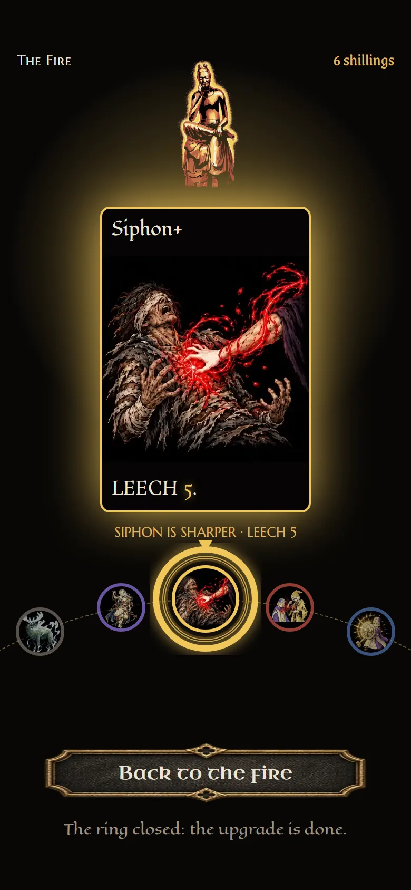

Your blend: H as the main, B's pair of cards, G's hold. Four layouts, each caught with the ring 60% full.
The same in all four: only the bead at the centre is offered and it wears the special border; you turn the wheel to bring a card there; HOLD fills a ring round that bead, and letting go early empties it.
They differ in how much of the wheel shows, where HOLD sits, and how big the statue is.
When the ring closes (all four): the old card goes and the new one flares, as below.
